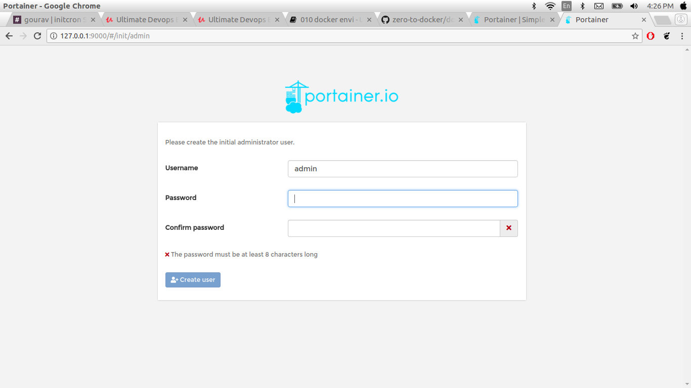

Just Enough Docker for a Openshift Practitioner
Setting up and validating docker environment
In this chapter, we are going to set docker environment. Visit docs.docker.com this page provides all the information of how to install docker on ubuntu, mac or windows. In this page left side you can see couple of options . when you select docker CE (Docker Community Edition). Thre is also provides instructions on different os platform.
There are two options
- docker EE
- docker CE
Here , we going for docker for ubuntu you can use the following script.
#!/bin/bash
apt-get update
apt-get install -y git wget
# Install Docker
apt-get install \
apt-transport-https \
ca-certificates \
curl \
software-properties-common
curl -fsSL https://download.docker.com/linux/ubuntu/gpg | sudo apt-key add -
apt-key fingerprint 0EBFCD88
add-apt-repository \
"deb [arch=amd64] https://download.docker.com/linux/ubuntu \
$(lsb_release -cs) \
stable"
apt-get update
apt-get install -yq docker-ce
After install docker using above script you can validate using following command
docker version
[output]
Client:
Version: 18.03.1-ce
API version: 1.37
Go version: go1.9.5
Git commit: 9ee9f40
Built: Thu Apr 26 07:17:20 2018
OS/Arch: linux/amd64
Experimental: false
Orchestrator: swarm
Server:
Engine:
Version: 18.03.1-ce
API version: 1.37 (minimum version 1.12)
Go version: go1.9.5
Git commit: 9ee9f40
Built: Thu Apr 26 07:15:30 2018
OS/Arch: linux/amd64
Experimental: false
Run docker Hello-world
sudo docker run hello-world
[output]
Unable to find image 'hello-world:latest' locally
latest: Pulling from library/hello-world
d1725b59e92d: Pull complete
Digest: sha256:0add3ace90ecb4adbf7777e9aacf18357296e799f81cabc9fde470971e499788
Status: Downloaded newer image for hello-world:latest
Hello from Docker!
This message shows that your installation appears to be working correctly.
To generate this message, Docker took the following steps:
1. The Docker client contacted the Docker daemon.
2. The Docker daemon pulled the "hello-world" image from the Docker Hub.
(amd64)
3. The Docker daemon created a new container from that image which runs the
executable that produces the output you are currently reading.
4. The Docker daemon streamed that output to the Docker client, which sent it
to your terminal.
To try something more ambitious, you can run an Ubuntu container with:
$ docker run -it ubuntu bash
Share images, automate workflows, and more with a free Docker ID:
https://hub.docker.com/
For more examples and ideas, visit:
https://docs.docker.com/get-started/
Play-with-docker
If you don't have way to install docker locally even remote server. you can also use protal play-with-docker
Here,
we have to login with your docker hub id and password. if you don't have docker hub id and password you should need to create your docker hub id and password docker hub . Play-with-docker gives you working docker environment. you can see the UI

Here,
In this Page left side create instance label click on on that label they provide you docker envirenment. you can also ren the following command.
docker version command shows you to all the information of docker like version, api version Git commit etc.
docker version
[output]
Client:
Version: 18.03.1-ce
API version: 1.37
Go version: go1.9.5
Git commit: 9ee9f40
Built: Thu Apr 26 07:17:20 2018
OS/Arch: linux/amd64
Experimental: false
Orchestrator: swarm
Server:
Engine:
Version: 18.03.1-ce
API version: 1.37 (minimum version 1.12)
Go version: go1.9.5
Git commit: 9ee9f40
Built: Thu Apr 26 07:15:30 2018
OS/Arch: linux/amd64
Experimental: false
Docker hello world image
docker run hello-world
[output]
Unable to find image 'hello-world:latest' locally
latest: Pulling from library/hello-world
d1725b59e92d: Pull complete
Digest: sha256:0add3ace90ecb4adbf7777e9aacf18357296e799f81cabc9fde470971e499788
Status: Downloaded newer image for hello-world:latest
Hello from Docker!
This message shows that your installation appears to be working correctly.
To generate this message, Docker took the following steps:
1. The Docker client contacted the Docker daemon.
2. The Docker daemon pulled the "hello-world" image from the Docker Hub.
(amd64)
3. The Docker daemon created a new container from that image which runs the
executable that produces the output you are currently reading.
4. The Docker daemon streamed that output to the Docker client, which sent it
to your terminal.
To try something more ambitious, you can run an Ubuntu container with:
$ docker run -it ubuntu bash
Share images, automate workflows, and more with a free Docker ID:
https://hub.docker.com/
For more examples and ideas, visit:
https://docs.docker.com/get-started/
Running your first container
when your enviromnment ready you can start your first docker container . when you running your forst docker container you need docker registry. Go to docker public registry. when you vist docker hub you can see bunch of images avaible here.
we are going to pick basic os image alpine . alpine is distribution of linux, ubuntu etc why we are choosing this image because of footprint of image and you can look at the size of the image look like 2 0r 3 mb that is relly good for smoke testing and running samaller images.
Now we have a basic understanding of docker command and sub commands, let us dive straight into launching our very first container
docker container run alpine:3.6 uptime
Where,
- we are using docker client to
- run a application/command uptime using
- an image by name alpine
[output]
Unable to find image 'alpine:3.6' locally
3.6: Pulling from library/alpine
117f30b7ae3d: Pull complete
Digest: sha256:02eb5cfe4b721495135728ab4aea87418fd4edbfbf83612130a81191f0b2aae3
Status: Downloaded newer image for alpine:3.6
07:45:40 up 3:13, load average: 0.00, 0.00, 0.00
What happened? This command will
- Pull the alpine image file from docker hub, a cloud registry
- Create a runtime environment/ container with the above image
- Launch a program (called uptime) inside that container
- Stream that output to the terminal
- Stop the container once the program is exited
Let's see what happens when we run that command again,
[Output]
docker run alpine uptime
07:48:06 up 3:15, load average: 0.00, 0.00, 0.00
Making container persist with -idt options
We can interact with docker containers by giving -it flags at the run time. These flags stand for
- i - Interactive
- t - tty
- d - detach
docker container run -it alpine:3.4 sh
[ouput]
Unable to find image 'alpine:3.4' locally
3.4: Pulling from library/alpine
e110a4a17941: Pull complete
Digest: sha256:3dcdb92d7432d56604d4545cbd324b14e647b313626d99b889d0626de158f73a
Status: Downloaded newer image for alpine:3.4
/ #
As you see, we have landed straight into sh shell of that container. This is the result of using -it flags and mentioning that container to run the sh shell. Don't try to exit that container yet. We have to execute some other commands in it to understand the next topic
if you go inside the container
Namespaced
Like a full fledged OS, Docker container has its own namespaces This enables Docker container to isolate itself from the host as well as other containers Run the following commands and see that alpine container has its own namespaces and not inheriting much from host OS
cat /etc/issue
Welcome to Alpine Linux 3.4
Kernel \r on an \m (\l)
/ #
command
pa aux
[output]
PID USER TIME COMMAND
1 root 0:00 sh
7 root 0:00 ps aux
ifconfig
[output]
eth0 Link encap:Ethernet HWaddr 02:42:AC:11:00:02
inet addr:172.17.0.2 Bcast:172.17.255.255 Mask:255.255.0.0
UP BROADCAST RUNNING MULTICAST MTU:1500 Metric:1
RX packets:64 errors:0 dropped:0 overruns:0 frame:0
TX packets:0 errors:0 dropped:0 overruns:0 carrier:0
collisions:0 txqueuelen:0
RX bytes:9402 (9.1 KiB) TX bytes:0 (0.0 B)
lo Link encap:Local Loopback
inet addr:127.0.0.1 Mask:255.0.0.0
UP LOOPBACK RUNNING MTU:65536 Metric:1
RX packets:0 errors:0 dropped:0 overruns:0 frame:0
TX packets:0 errors:0 dropped:0 overruns:0 carrier:0
collisions:0 txqueuelen:1000
RX bytes:0 (0.0 B) TX bytes:0 (0.0 B)
Essential Container Operations - list, logs, exec, cp, inspect, stop, rm
In this secttion we are looking for some of the essential container operations like list,logs, exec etc.
First we do list the containers
docker ps -a
[output]
CONTAINER ID IMAGE COMMAND CREATED STATUS PORTS NAMES
60c643264937 alpine:3.4 "sh" 16 minutes ago Exited (0) 2 minutes ago kind_babbage
105b0de546cb ubuntu "bash" About an hour ago Exited (0) About an hour ago admiring_cori
8801c9dc6617 hello-world "/hello" 2 hours ago Exited (0) 2 hours ago hardcore_blackwell
change the container name
docker rename kind_babbage loop
[output]
CONTAINER ID IMAGE COMMAND CREATED STATUS PORTS NAMES
60c643264937 alpine:3.4 "sh" 17 minutes ago Exited (0) 2 minutes ago loop
105b0de546cb ubuntu "bash" About an hour ago Exited (0) About an hour ago admiring_cori
8801c9dc6617 hello-world "/hello" 2 hours ago Exited (0) 2 hours ago hardcore_blackwell
look at the name of the first container
If you want to follow the log in real-time, use -f flag
docker logs 5a75df45379c
[output]
PID USER TIME COMMAND
1 root 0:00 ps aux , uptime
docker exec this command allows you to run command inside container
docker exec e9f957dca1b7 ps aux
[output]
PID USER TIME COMMAND
1 root 0:00 /bin/sh
6 root 0:00 ps aux
you can also use docker inspect command . this command gives you detail information about container
docker inspect e9f957dca1b7
[output]
[
{
"Id": "e9f957dca1b727be04357c77edbb2e2b257b22c0832d9f13b4ff06e3854a1237",
"Created": "2018-09-25T08:49:47.619188383Z",
"Path": "/bin/sh",
"Args": [],
"State": {
"Status": "running",
"Running": true,
"Paused": false,
"Restarting": false,
"OOMKilled": false,
"Dead": false,
"Pid": 19679,
"ExitCode": 0,
"Error": "",
"StartedAt": "2018-09-25T08:49:48.794801063Z",
"FinishedAt": "0001-01-01T00:00:00Z"
},
"Image": "sha256:174b26fe09c724368aa2c3cc8f2b979b915a33f7b50c94cd215380d56147cd60",
"ResolvConfPath": "/var/lib/docker/containers/e9f957dca1b727be04357c77edbb2e2b257b22c0832d9f13b4ff06e3854a1237/resolv.conf",
"HostnamePath": "/var/lib/docker/containers/e9f957dca1b727be04357c77edbb2e2b257b22c0832d9f13b4ff06e3854a1237/hostname",
"HostsPath": "/var/lib/docker/containers/e9f957dca1b727be04357c77edbb2e2b257b22c0832d9f13b4ff06e3854a1237/hosts",
"LogPath": "/var/lib/docker/containers/e9f957dca1b727be04357c77edbb2e2b257b22c0832d9f13b4ff06e3854a1237/e9f957dca1b727be04357c77edbb2e2b257b22c0832d9f13b4ff06e3854a1237-json.log",
"Name": "/xenodochial_hugle",
"RestartCount": 0,
"Driver": "overlay2",
"Platform": "linux",
"MountLabel": "",
"ProcessLabel": "",
"AppArmorProfile": "docker-default",
"ExecIDs": null,
"HostConfig": {
"Binds": null,
"ContainerIDFile": "",
"LogConfig": {
"Type": "json-file",
"Config": {}
},
"NetworkMode": "default",
"PortBindings": {},
"RestartPolicy": {
"Name": "no",
"MaximumRetryCount": 0
},
"AutoRemove": false,
"VolumeDriver": "",
"VolumesFrom": null,
"CapAdd": null,
"CapDrop": null,
"Dns": [],
"DnsOptions": [],
"DnsSearch": [],
"ExtraHosts": null,
"GroupAdd": null,
"IpcMode": "shareable",
"Cgroup": "",
"Links": null,
"OomScoreAdj": 0,
"PidMode": "",
"Privileged": false,
"PublishAllPorts": false,
"ReadonlyRootfs": false,
"SecurityOpt": null,
"UTSMode": "",
"UsernsMode": "",
"ShmSize": 67108864,
"Runtime": "runc",
"ConsoleSize": [
0,
0
],
"Isolation": "",
"CpuShares": 0,
"Memory": 0,
"NanoCpus": 0,
"CgroupParent": "",
"BlkioWeight": 0,
"BlkioWeightDevice": [],
"BlkioDeviceReadBps": null,
"BlkioDeviceWriteBps": null,
"BlkioDeviceReadIOps": null,
"BlkioDeviceWriteIOps": null,
"CpuPeriod": 0,
"CpuQuota": 0,
"CpuRealtimePeriod": 0,
"CpuRealtimeRuntime": 0,
"CpusetCpus": "",
"CpusetMems": "",
"Devices": [],
"DeviceCgroupRules": null,
"DiskQuota": 0,
"KernelMemory": 0,
"MemoryReservation": 0,
"MemorySwap": 0,
"MemorySwappiness": null,
"OomKillDisable": false,
"PidsLimit": 0,
"Ulimits": null,
"CpuCount": 0,
"CpuPercent": 0,
"IOMaximumIOps": 0,
"IOMaximumBandwidth": 0
},
"GraphDriver": {
"Data": {
"LowerDir": "/var/lib/docker/overlay2/517ee8ad38d79c97b5b4d9351058cf658265bbd752ffca764d6123cd5a45d7a3-init/diff:/var/lib/docker/overlay2/0ff2c00ee39d00f3cbdee2538e5bd08c0650b0a7531e6277513fb1411177c056/diff",
"MergedDir": "/var/lib/docker/overlay2/517ee8ad38d79c97b5b4d9351058cf658265bbd752ffca764d6123cd5a45d7a3/merged",
"UpperDir": "/var/lib/docker/overlay2/517ee8ad38d79c97b5b4d9351058cf658265bbd752ffca764d6123cd5a45d7a3/diff",
"WorkDir": "/var/lib/docker/overlay2/517ee8ad38d79c97b5b4d9351058cf658265bbd752ffca764d6123cd5a45d7a3/work"
},
"Name": "overlay2"
},
"Mounts": [],
"Config": {
"Hostname": "e9f957dca1b7",
"Domainname": "",
"User": "",
"AttachStdin": false,
"AttachStdout": false,
"AttachStderr": false,
"Tty": true,
"OpenStdin": true,
"StdinOnce": false,
"Env": [
"PATH=/usr/local/sbin:/usr/local/bin:/usr/sbin:/usr/bin:/sbin:/bin"
],
"Cmd": [
"/bin/sh"
],
"ArgsEscaped": true,
"Image": "alpine:3.4",
"Volumes": null,
"WorkingDir": "",
"Entrypoint": null,
"OnBuild": null,
"Labels": {}
},
"NetworkSettings": {
"Bridge": "",
"SandboxID": "a819dc4b5b24f71699cc58804ba227dfbfcd1431deab0bea5fe27ab5b97cc95e",
"HairpinMode": false,
"LinkLocalIPv6Address": "",
"LinkLocalIPv6PrefixLen": 0,
"Ports": {},
"SandboxKey": "/var/run/docker/netns/a819dc4b5b24",
"SecondaryIPAddresses": null,
"SecondaryIPv6Addresses": null,
"EndpointID": "9de8e6914d71fc9b6d569a56ebaeae58aeb1fa21717aa1d94f200d22d82e0d37",
"Gateway": "172.17.0.1",
"GlobalIPv6Address": "",
"GlobalIPv6PrefixLen": 0,
"IPAddress": "172.17.0.2",
"IPPrefixLen": 16,
"IPv6Gateway": "",
"MacAddress": "02:42:ac:11:00:02",
"Networks": {
"bridge": {
"IPAMConfig": null,
"Links": null,
"Aliases": null,
"NetworkID": "a379dcbffa8fff8004d04727d8898d46cf032a830a18d8507d7acbb3d14c552a",
"EndpointID": "9de8e6914d71fc9b6d569a56ebaeae58aeb1fa21717aa1d94f200d22d82e0d37",
"Gateway": "172.17.0.1",
"IPAddress": "172.17.0.2",
"IPPrefixLen": 16,
"IPv6Gateway": "",
"GlobalIPv6Address": "",
"GlobalIPv6PrefixLen": 0,
"MacAddress": "02:42:ac:11:00:02",
"DriverOpts": null
}
}
}
}
]
docker copy
docker cp testfile e9f957dca1b7:/opt
docker diff
docker diff e9f957dca1b7
[output]
A /opt
docker stop
docker stop e9f 1b7
[output]
e9f
1b7
docker remove
docker rm e9f 1b7
[output]
e9f
1b7
Publishing containers using port mapping
Now, we have already start container, now access that application outside world, we are going through to launch container nginx web server image you can choose the image on docker hub registry for latest version.
docker container run -idt -P nginx
[output]
Unable to find image 'nginx:latest' locally
latest: Pulling from library/nginx
802b00ed6f79: Pull complete
e9d0e0ea682b: Pull complete
d8b7092b9221: Pull complete
Digest: sha256:24a0c4b4a4c0eb97a1aabb8e29f18e917d05abfe1b7a7c07857230879ce7d3d3
Status: Downloaded newer image for nginx:latest
6d631d2ecfddb76481e2e75c6f14373dde5907e442231c38c062574cc4b880da
Check the port
docker ps
[output]
CONTAINER ID IMAGE COMMAND CREATED STATUS PORTS NAMES
6d631d2ecfdd nginx "nginx -g 'daemon of…" 49 seconds ago Up 47 seconds 0.0.0.0:32768->80/tcp dreamy_gates
the container are running on inside port 80 . If you want to acess on outside use the port 32768. docker are automatically pick up the port access this outside use your host_ip:32768 in browser.
you can also define specific port use following command
docker container run -idt -p 8888:80 nginx
docker ps
[output]
CONTAINER ID IMAGE COMMAND CREATED STATUS PORTS NAMES
3104f3f3c062 nginx "nginx -g 'daemon of…" 52 seconds ago Up 50 seconds 0.0.0.0:8888->80/tcp mystifying_golick
6d631d2ecfdd nginx "nginx -g 'daemon of…" 11 minutes ago Up 11 minutes 0.0.0.0:32768->80/tcp dreamy_gates
we going to deploy another web based application ghost
docker run -d --name ghost -p 3001:2368 ghost:alpine
[output]
Unable to find image 'ghost:alpine' locally
alpine: Pulling from library/ghost
4fe2ade4980c: Already exists
eeb7d76f44e7: Pull complete
e35f88fcc259: Pull complete
b4d59ef07366: Pull complete
dcee404d51ae: Pull complete
f0d2c5f09664: Pull complete
6feecb37b3bd: Pull complete
4e29bf9bf09f: Pull complete
Digest: sha256:d1d329a9e28096003ddbce69f3fc4a81b72c2c0c9e88426fc432fd3f0e1146e1
Status: Downloaded newer image for ghost:alpine
4c84890e1f4438a647b287751beeda02490ed7a312c05ae4a64ba7f01047a76b
docker ps
[output]
CONTAINER ID IMAGE COMMAND CREATED STATUS PORTS NAMES
4c84890e1f44 ghost:alpine "docker-entrypoint.s…" 40 seconds ago Up 38 seconds 0.0.0.0:3001->2368/tcp ghost
3104f3f3c062 nginx "nginx -g 'daemon of…" 8 minutes ago Up 8 minutes 0.0.0.0:8888->80/tcp mystifying_golick
6d631d2ecfdd nginx "nginx -g 'daemon of…" 19 minutes ago Up 19 minutes 0.0.0.0:32768->80/tcp dreamy_gates
this application are running on port 3001 you can see on web browser host_ip:3001 or localhost:3001
Using docker instead of VMs to create development environments
If you have using vm to runing docker container it takes some extra time to run docker container . if you want to see all the images use following command. this shows you all the present images in your local environment.
docker images
[output]
ghost alpine fd8dde6880e2 4 days ago 422MB
alpine 3.4 174b26fe09c7 13 days ago 4.82MB
alpine latest 196d12cf6ab1 13 days ago 4.41MB
hello-world latest 4ab4c602aa5e 2 weeks ago 1.84kB
ubuntu latest cd6d8154f1e1 2 weeks ago 84.1MB
if wanna see all the layers of docker image use following command
docker image history ghost:alpine
[output]
IMAGE CREATED CREATED BY SIZE COMMENT
fd8dde6880e2 4 days ago /bin/sh -c #(nop) CMD ["node" "current/inde… 0B
<missing> 4 days ago /bin/sh -c #(nop) EXPOSE 2368/tcp 0B
<missing> 4 days ago /bin/sh -c #(nop) ENTRYPOINT ["docker-entry… 0B
<missing> 4 days ago /bin/sh -c #(nop) COPY file:984b6359fb5468bd… 584B
<missing> 4 days ago /bin/sh -c #(nop) VOLUME [/var/lib/ghost/co… 0B
<missing> 4 days ago /bin/sh -c #(nop) WORKDIR /var/lib/ghost 0B
<missing> 4 days ago /bin/sh -c set -ex; mkdir -p "$GHOST_INSTAL… 301MB
<missing> 4 days ago /bin/sh -c #(nop) ENV GHOST_VERSION=2.1.3 0B
<missing> 10 days ago /bin/sh -c #(nop) ENV GHOST_CONTENT=/var/li… 0B
<missing> 10 days ago /bin/sh -c #(nop) ENV GHOST_INSTALL=/var/li… 0B
<missing> 10 days ago /bin/sh -c npm install -g "ghost-cli@$GHOST_… 51.3MB
<missing> 10 days ago /bin/sh -c #(nop) ENV GHOST_CLI_VERSION=1.9… 0B
<missing> 13 days ago /bin/sh -c #(nop) ENV NODE_ENV=production 0B
<missing> 13 days ago /bin/sh -c apk add --no-cache bash 3.82MB
<missing> 13 days ago /bin/sh -c apk add --no-cache 'su-exec>=0.2' 31.8kB
<missing> 13 days ago /bin/sh -c #(nop) CMD ["node"] 0B
<missing> 13 days ago /bin/sh -c apk add --no-cache --virtual .bui… 4.53MB
<missing> 13 days ago /bin/sh -c #(nop) ENV YARN_VERSION=1.9.4 0B
<missing> 13 days ago /bin/sh -c addgroup -g 1000 node && addu… 56.7MB
<missing> 13 days ago /bin/sh -c #(nop) ENV NODE_VERSION=8.12.0 0B
<missing> 13 days ago /bin/sh -c #(nop) CMD ["/bin/sh"] 0B
<missing> 13 days ago /bin/sh -c #(nop) ADD file:25c10b1d1b41d46a1… 4.41MB
If you want to use docker devlopment envireonment just pull the ubuntu and centos image you can pull images using docker images
docker pull ubuntu
[outpot]
Using default tag: latest
latest: Pulling from library/ubuntu
Digest: sha256:de774a3145f7ca4f0bd144c7d4ffb2931e06634f11529653b23eba85aef8e378
Status: Image is up to date for ubuntu:latest
pulling centos
docker pull centos
[output]
Using default tag: latest
latest: Pulling from library/centos
256b176beaff: Pull complete
Digest: sha256:6f6d986d425aeabdc3a02cb61c02abb2e78e57357e92417d6d58332856024faf
Status: Downloaded newer image for centos:latest
here, the images are ready we are going to create dev environment using ubuntu image
docker container run -idt --name dev --net host ubuntu bash
158dfe96692f9381842d009abfea428614fed4d9a16de68d18b408549315fbd9
docker container run -idt --name dev-centos --net host centos bash
99be0c7548ab3c762d7af2fa0cc73a5ad1505589424d82bea2c065a4f1d3bdf7
docker ps -n 2
[output]
CONTAINER ID IMAGE COMMAND CREATED STATUS PORTS NAMES
99be0c7548ab centos "bash" 57 seconds ago Up 56 seconds dev-centos
158dfe96692f ubuntu "bash" 2 minutes ago Up 2 minutes dev
if you want to go inside container use following command
docker exec -it dev bash
you can check procees inside the container
ps aux
USER PID %CPU %MEM VSZ RSS TTY STAT START TIME COMMAND
root 1 0.0 0.0 18508 3004 pts/0 Ss+ 10:15 0:00 bash
root 10 0.0 0.0 18508 3384 pts/1 Ss 10:20 0:00 bash
root 20 0.0 0.0 34400 2772 pts/1 R+ 10:21 0:00 ps aux
you can run fowwing command also
apt-get update
apt-get install vim
touch /opt/testfile
docker stop dev
docker start dev
you can persist the data across. make the changes of dev environment as well , we wiiljust stop and start contaoner see the changes before start and stop.
docker exec -it dev bash
excute the following caommand
which vim
ls /opt/
Portainer - Web console to managing Docker Environemnts
In this Section we are goiing for portainer web console which will allow you web based application which manages your local or remote docker environment. you can also visit the portainer
docker volume create portainer_data
[output]
portainer_data
After creating volume excute following command
docker run -d -p 9000:9000 -v /var/run/docker.sock:/var/run/docker.sock -v portainer_data:/data portainer/portainer
[output]
Unable to find image 'portainer/portainer:latest' locally
latest: Pulling from portainer/portainer
d1e017099d17: Pull complete
d4e5419541f5: Pull complete
Digest: sha256:07c0e19e28e18414dd02c313c36b293758acf197d5af45077e3dd69c630e25cc
Status: Downloaded newer image for portainer/portainer:latest
db7a8c18cdfcae46d6ccb9d3d5ad0a48568fdc8e5827f478f0c44b95b8235bdf
which will aloow container to connect to docker daemon and mange its on.
docker ps
[output]
CONTAINER ID IMAGE COMMAND CREATED STATUS PORTS NAMES
db7a8c18cdfc portainer/portainer "/portainer" About a minute ago Up About a minute 0.0.0.0:9000->9000/tcp zen_jepsen
99be0c7548ab centos "bash" 32 minutes ago Up 32 minutes dev-centos
158dfe96692f ubuntu "bash" 34 minutes ago Up 34 minutes dev
4c84890e1f44 ghost:alpine "docker-entrypoint.s…" About an hour ago Up About an hour 0.0.0.0:3001->2368/tcp ghost
3104f3f3c062 nginx "nginx -g 'daemon of…" About an hour ago Up About an hour 0.0.0.0:8888->80/tcp mystifying_golick
6d631d2ecfdd nginx "nginx -g 'daemon of…" 2 hours ago Up 2 hours 0.0.0.0:32768->80/tcp dreamy_gates
go to web browser use host_ip:9000 or loaclhost:9000

here,we have create the password you it at least 8 char long

here i have to use my local environment
- click on as per your environment
- click on connect

above are the portainer page is already been setup. we dont worry abot how to launch this portainer set up this alredy avaible on docker images.
- clik on local up

here you can see how many container are present , network, volume etc
Launching Application Stack with Docker Compose
In this sections we are going to launch prometheus applications. the prometheus application are multiple serices present like pushgateawy and alertmanager that wy we need docker-compose file. just clone prometus repo.
git clone https://github.com/vegasbrianc/prometheus.git
cd prometheus
cat docker-compose.yaml
[output]
version: '3.1'
volumes:
prometheus_data: {}
grafana_data: {}
networks:
front-tier:
back-tier:
services:
prometheus:
image: prom/prometheus:v2.1.0
volumes:
- ./prometheus/:/etc/prometheus/
- prometheus_data:/prometheus
command:
- '--config.file=/etc/prometheus/prometheus.yml'
- '--storage.tsdb.path=/prometheus'
- '--web.console.libraries=/usr/share/prometheus/console_libraries'
- '--web.console.templates=/usr/share/prometheus/consoles'
ports:
- 9090:9090
links:
- cadvisor:cadvisor
- alertmanager:alertmanager
depends_on:
- cadvisor
networks:
- back-tier
restart: always
# deploy:
# placement:
# constraints:
# - node.hostname == ${HOSTNAME}
node-exporter:
image: prom/node-exporter
volumes:
- /proc:/host/proc:ro
- /sys:/host/sys:ro
- /:/rootfs:ro
command:
- '--path.procfs=/host/proc'
- '--path.sysfs=/host/sys'
- --collector.filesystem.ignored-mount-points
- "^/(sys|proc|dev|host|etc|rootfs/var/lib/docker/containers|rootfs/var/lib/docker/overlay2|rootfs/run/docker/netns|rootfs/var/lib/docker/aufs)($$|/)"
ports:
- 9100:9100
networks:
- back-tier
restart: always
deploy:
mode: global
alertmanager:
image: prom/alertmanager
ports:
- 9093:9093
volumes:
- ./alertmanager/:/etc/alertmanager/
networks:
- back-tier
restart: always
command:
- '--config.file=/etc/alertmanager/config.yml'
- '--storage.path=/alertmanager'
# deploy:
# placement:
# constraints:
# - node.hostname == ${HOSTNAME}
cadvisor:
image: google/cadvisor
volumes:
- /:/rootfs:ro
- /var/run:/var/run:rw
- /sys:/sys:ro
- /var/lib/docker/:/var/lib/docker:ro
ports:
- 8080:8080
networks:
- back-tier
restart: always
deploy:
mode: global
grafana:
image: grafana/grafana
user: "104"
depends_on:
- prometheus
ports:
- 3000:3000
volumes:
- grafana_data:/var/lib/grafana
- ./grafana/provisioning/:/etc/grafana/provisioning/
env_file:
- ./grafana/config.monitoring
networks:
- back-tier
- front-tier
restart: always
In this file you can see all the services are defined with portmapping. you can run the following command to run docker compose file
docker-compose up -d
also use stop and down . stop for stop the all created container and down for delete all create container.
docker-compose stop
docker-compose down
Building an image manually with docker commit
In this section we are going to see how to create image of application just excute following command
git clone https://github.com/schoolofdevops/facebooc.git
after cloning this repo we are going to launch ubuntu image this application running on port 1600 that why we are already exposing port.
docker container run -idt --name fb -p 16000:16000 ubuntu bash
connect to that container using following command
docker exec -it fb bash
after connecting that container use following instructions.
Install following package:
- build-essential
- make
- libsqlite3-dev
- sqlite3
sudo apt-get update
sudo apt-get install -yq build-essential make libsqlite3-dev sqlite3
after installing this packages we need source code cpoy your source code in insisde the container.
docker cp facebooc/ fb:/opt/
after copying the data go inside the container
docker exec -it fb bash
switch the dir.
cd /opt/facebooc/
then Build the application using following command
make all
Run the application using binary
bin/facebooc
now go to the web browser host_ip:16000 or localhost:16000
then exit the container commit container using following command including your own tag with your docker hub id
docker container commit fb initcron/fb:v1
After creating image push to docker hub registry
docker login
docker image push initcron/fb:v1
Automatiing image builds with a Dockerfile
Above section we build the image using manual approch. In this we going to dockerfile to build image automation. just clone the repo. using following command.
git clone https://github.com/schoolofdevops/facebooc.git
cd facebooc
git checkout docker
you can see the Dockerfile
cat Dockerfile
[output]
FROM ubuntu
WORKDIR /opt/facebooc
RUN apt-get update && \
apt-get install -yq build-essential make git libsqlite3-dev sqlite3
COPY . /opt/facebooc
RUN make all
EXPOSE 16000
CMD "bin/facebooc"
then build docker image image
docker image build -t initcron/fb:v2 .
after build image launch it
docker container run -idt -P initcron/fb:v2